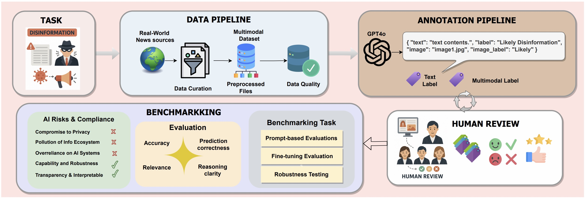

VLDBench: A Vision–Language Benchmark for Multimodal Disinformation Detection

🌐 Website | 📄 Paper | 📊 Dataset
🧠 Overview
As generative AI reshapes digital media, disinformation becomes harder to detect—especially when combining text and images. VLDBench is the first large-scale human-verified multimodal disinformation benchmark, built to assess Language Models (LLMs) and Vision–Language Models (VLMs) under real-world disinformation scenarios.
Key Goals: - Evaluate trustworthiness, robustness, and governance alignment - Promote transparent AI evaluation in multimodal misinformation contexts
📦 Features
- 📰 62,000+ Image–Article Pairs
- 👥 22 Domain Experts & 500+ Hours of Verification
- 🧪 Binary Classification + Open-ended Reasoning
- 🧠 Multimodal & Unimodal Support (Text-only + Text+Image)
- 🌐 Real News from 58 Global Outlets Across 13 Categories
- 🔍 Perturbation-based Robustness Evaluation
📂 Evaluation Tasks Overview
| Task Type | Description |
|---|---|
| Binary Classification | Predict if a sample is Likely or Unlikely Disinformation (Text or Text+Image) |
| Multimodal Reasoning | Explain disinformation using visual + textual cues |
| Robustness Testing | Apply perturbations: noise, blur, text negation, cross-modal contradictions |
| Instruction Fine-tuning | Assess models’ ability to learn from labeled examples |
| Human Evaluation | Rate correctness and reasoning clarity across LLMs and VLMs |
🧬 Pipeline
VLDBench follows a five-stage process:
- Task Definition: Formalize disinformation detection
- Data Pipeline: Curate real-world articles + images from 58 sources
- Annotation: GPT-4o assisted with human review
- Expert Review: 22 domain experts verify each label
- Benchmarking: Evaluate LLMs and VLMs for accuracy, robustness, and governance compliance
📊 Benchmarked Models
Evaluated Models: - 9 LLMs (e.g., Vicuna-7B, LLaMA-3.2-1B) - 10 VLMs (e.g., LLaVA-v1.6, GLM-4V-9B, LLaMA-3.2-11B-Vision)
Key Result:
📈 Multimodal models outperform text-only models by up to 15% in accuracy, but are more vulnerable to cross-modal attacks.
| LLMs (Text-only) | VLMs (Text+Image) |
|---|---|
| Phi-3-mini-128k-instruct | Phi-3-Vision-128k-Instruct |
| Vicuna-7B-v1.5 | LLaVA-v1.5-Vicuna7B |
| Mistral-7B-Instruct-v0.3 | LLaVA-v1.6-Mistral-7B |
| Qwen2-7B-Instruct | Qwen2-VL-7B-Instruct |
| InternLM2-7B | InternVL2-8B |
| DeepSeek-V2-Lite-Chat | Deepseek-VL2-small |
| GLM-4-9B-chat | GLM-4V-9B |
| LLaMA-3.1-8B-Instruct | LLaMA-3.2-11B-Vision |
| LLaMA-3.2-1B-Instruct | Deepseek Janus-Pro-7B |
| – | Pixtral |
🔑 Key Insights
✅ VLMs outperform LLMs on disinformation
✅ Instruction-tuning improves accuracy by 5–10%
✅ Combined attacks (text + image) reduce accuracy by up to 26%
✅ Scalability improves performance, especially in larger VLMs
✅ Human ratings confirm higher correctness and clarity in top models
📚 Citation
If you use VLDBench in your work, please cite:
@misc{raza2025vldbenchvisionlanguagemodels,
title={VLDBench: Vision Language Models Disinformation Detection Benchmark},
author={Shaina Raza and Ashmal Vayani and Aditya Jain and Aravind Narayanan and Vahid Reza Khazaie and Syed Raza Bashir and Elham Dolatabadi and Gias Uddin and Christos Emmanouilidis and Rizwan Qureshi and Mubarak Shah},
year={2025},
eprint={2502.11361},
archivePrefix={arXiv},
primaryClass={cs.CL},
url={https://arxiv.org/abs/2502.11361},
}
📬 Contact
For questions, collaborations, or dataset access requests, please contact the corresponding author at shaina.raza@vectorinstitute.ai.
⚡ VLDBench aims to foster robust, fair, and transparent multimodal AI.
We invite researchers, developers, and policymakers to explore, evaluate, and extend VLDBench. 🔍🚀